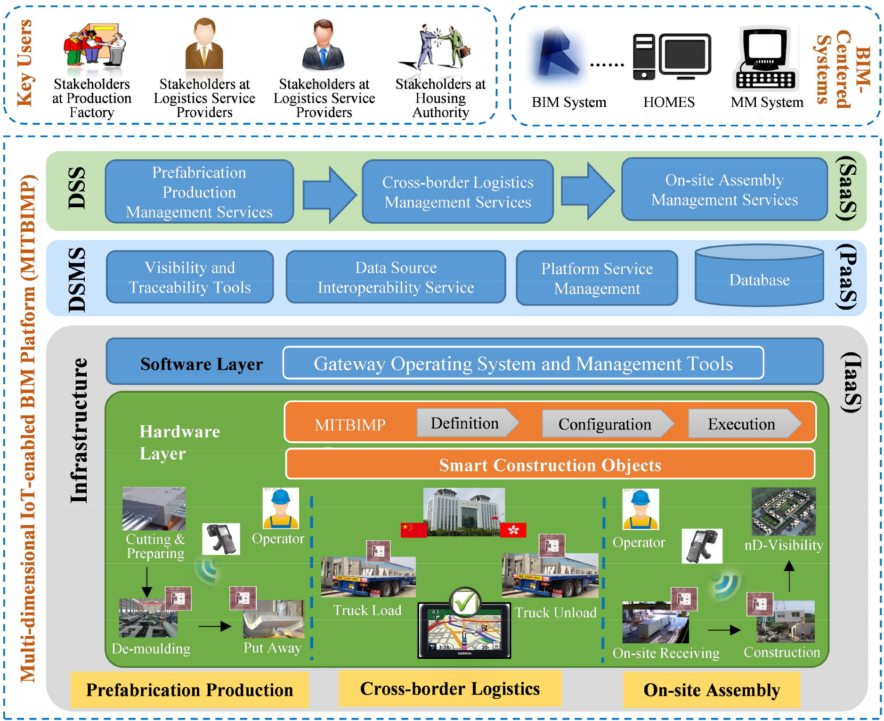
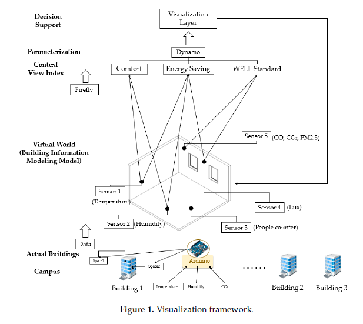
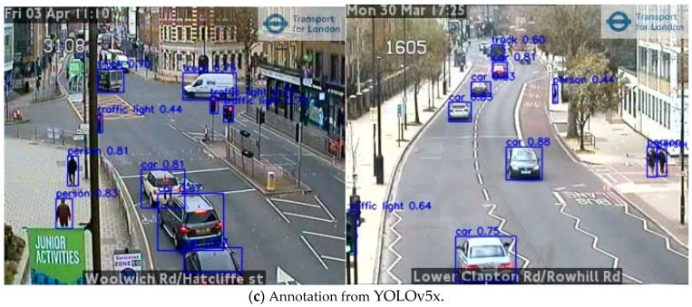

Transformação Digital em Arquitetura e Urbanismo:
novos paradigmas
Miniaula - SENAI-CIMATEC - 16/01/2023
Fernando Ferraz Ribeiro ffribeiro@gmail.com

"The more accurate the map, the more it resembles the territory. The most accurate map possible would be the territory, and thus would be perfectly accurate and perfectly useless."
Neil Gaiman, American Gods
Digital Transformations
O que são transformações digitais?
Em uma definição simples:
Transformação digital pode ser definida como um fenômeno que incorpora o uso da tecnologia digital às soluções de problemas tradicionais. Assim, abrange mudanças procedurais em diversos âmbitos de uma sociedade, isto é, essa transformação modifica o paradigma da utilização da tecnologia, por exemplo, das seguintes áreas: governo, economia, mercado de trabalho, educação, medicina, artes, ciência, comunicação global, entre outros
https://pt.wikipedia.org/wiki/Transforma%C3%A7%C3%A3o_digitalJá que a computação surge justamente para prover soluções para problemas tradicionais, algumas questões emergem:
- Seria toda a computação uma forma de transformação digital?
- Em caso de resposta negativa, o que diferencia as transformações digitais das demais aplicações de computação?
Um artigo de revisão de literatura foi utilizado como referência para definir melhor o conceito de TD
O artigo trata:
- Da revisão sistemática de 282 artigos revisados por pares, de caráter teórico e prático sobre Transformações digitais na área de Ciência da Informação
- De propor uma definição de Transformação Digital baseada na análise semântica de 23 definições únicas encontradas nos artigos
- De procurar responder a pergunta sobre existir ou não uma diferença entre transformações digitais e computação em geral
- De possíveis desdobramentos de pesquisa dentro do tema
Os autores definem Transformações digitais como:
Um processo que visa melhorar uma entidade, desencadeando mudanças significativas em suas características, por meio de combinações de tecnologias de informação, computação, comunicação e conectividade
O termo entidade procura englobar vários tipos de organização:
- Empresas;
- Industria;
- Sociedade;
- Administração pública;
- etc.
O escopo mais comum onde este fenômeno aparece, é descrito pelo acrónimo SMACIT:
- Social;
- Mobile (dispositivos móveis);
- Analytics (análise de dados);
- Cloud (computação em nuvem);
- Internet of things (internet das coisas)
Embora eventualmente também trate de outros meios como a internet (de forma geral) e a tecnologia Blockchain
Esquema geral do conceito de aplicações digitais
Outras observações:
- As transformações são uma especialização entre as demais aplicações de computação;
- Entre os desafios de implantação temos a necessidade de mudar a cultura das organizações e as habilidades e competências de seus membros;
- É preciso repensar o papel do setor de TI das empresas;
- Profissionais de outras áreas podem liderar projetos fortemente baseados em tecnologias digitais;
- Profissionais de TI precisam entender do negócio da empresa;
- Tratam principalmente de mudanças de curto e médio prazo;
- Diferentes autores definem Transformações Digitais como fenômenos internos ou externos ás organizações
- Existem implicações éticas que deve ser tratadas dentro deste paradigma;
O conceito de BIM tem muitas ligações com o paradigma das Transformações digitais
O termo Building Information Model (BIM) aparece pela primeira vez, nesta pesquisa, entre as palavras-chaves do artigo de Nederveen e Tolman (1992). A definição do termo entre os artigos mais citados e que estão no escopo desta pesquisa é de Succar (2009), que usa um trecho de Penttilä (2006).
Succar afirma que BIM é um conjunto de políticas, processos e tecnologias que, interagindo, geram uma metodologia para a gestão, em formato digital, do projeto de uma edificação e de seus dados, durante todo seu ciclo de vida.
Ciclo de vida da edificação

BIM
x
Transformações digitais
Observações sobre BIM x Transformações Digitais
- Ambos são processos que se apoiam e tecnologias digitais;
- Arquitetura e construção são, em geral, produzidos por empresas que podem se beneficiar do paradigma das Transformações Digitais;
- Algumas aplicações que utilizam BIM e/ou da indústria da construção se apoiam também em tecnologias descritas pelo acrónimo SMACIT;
A visão da Autodesk
- Productization (Pré-fabricação e padronização de elementos construtivos);
- Digital Collaboration (colaboração digital);
- Data Management (gerência de dados);
Digital Transformation of the AEC Industry - Autodesk University
Exemplo: Prefabricated construction enabled by the Internet-of-Things
ZHONG, R. Y. et al. Prefabricated construction enabled by the Internet-of-Things. Automation in Construction, v. 76, p. 59–70, 2017
Exemplo: Automated IoT Visualization BIM Platform for Decision Support in Facilities Management
CHANG, K.-M.; DZENG, R.-J.; WU, Y.-J. An Automated IoT Visualization BIM Platform for Decision Support in Facilities Management. Applied Sciences, v. 8, n. 7, p. 1086, 2018.
Ferramenta: BIMServer
BimServer.
Ferramenta: Speckle
https://speckle.systems/
Cloud computing platform:
Parametric Solutions
https://www.parametric.se/
Conceito de Smart Cities
O conceito de Smart Cities tem muitas ligações com o paradigma das Transformações Digitais
Exemplo: Countrywide population movement monitoring using mobile devices generated (big) data during the COVID‑19 crisis

https://doi.org/10.1038/s41598-021-81873-6
Exemplo: Estimating Vehicle and Pedestrian Activity from Town and City Traffic Cameras
https://www.ncbi.nlm.nih.gov/pmc/articles/PMC8271938/
Exemplo: Long-term evaluation on urban intensive land use in five fast-growing cities of northern China with GEE support
 https://www.nature.com/articles/s41598-021-00285-8
https://www.nature.com/articles/s41598-021-00285-8
Conclusão:

https://d.ibtimes.co.uk/en/full/1622009/will-robots-take-over-our-jobs.jpg